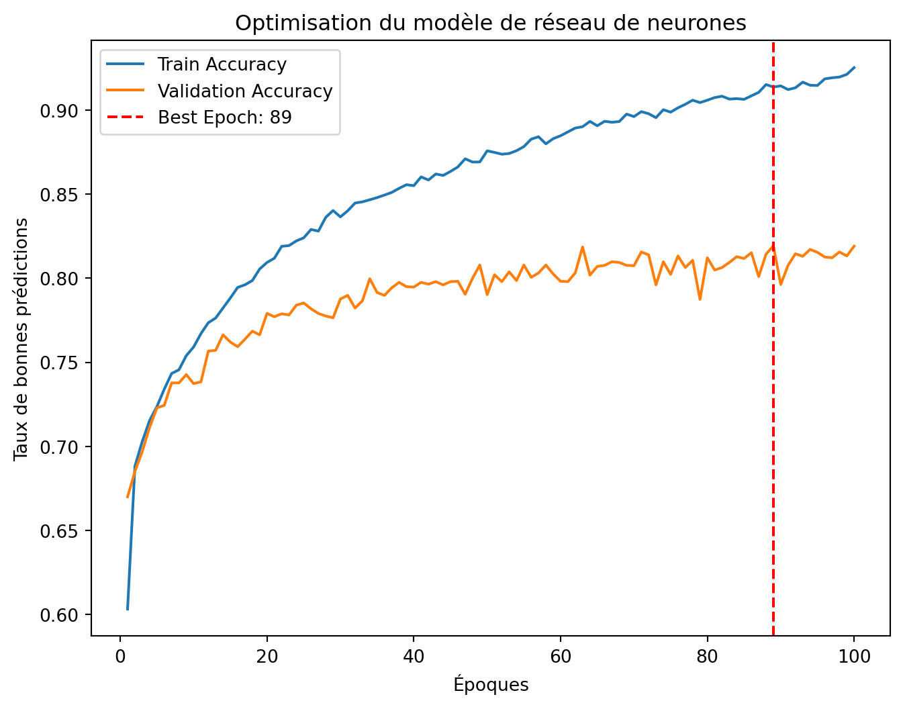

import pandas as pd
import matplotlib.pyplot as plt
import tensorflow as tf
from tensorflow import keras
from sklearn.metrics import classification_report, confusion_matrix, accuracy_score
from sklearn.model_selection import train_test_split
from sklearn.preprocessing import StandardScaler
# Chargement des ensembles de données
train_data = pd.read_csv('covertype_train.csv')
val_data = pd.read_csv('covertype_val.csv')
test_data = pd.read_csv('covertype_test.csv')
# Préparation des données
X_train = train_data.drop('Cover_Type', axis=1)
y_train = train_data['Cover_Type'] - 1 # Ajustement des labels pour correspondre à l'indexation Python
X_val = val_data.drop('Cover_Type', axis=1)
y_val = val_data['Cover_Type'] - 1
X_test = test_data.drop('Cover_Type', axis=1)
y_test = test_data['Cover_Type'] - 1
# Normalisation des données
scaler = StandardScaler()
X_train = scaler.fit_transform(X_train)
X_val = scaler.transform(X_val)
X_test = scaler.transform(X_test)
# Définition du modèle
model = keras.Sequential([
keras.layers.Dense(128, activation='relu', input_shape=(X_train.shape[1],)),
keras.layers.Dense(64, activation='relu'),
keras.layers.Dense(len(set(y_train)), activation='softmax')
])
# Utilisation d'Adam avec un pas d'apprentissage adaptatif
optimizer = keras.optimizers.Adam()
model.compile(optimizer=optimizer, loss='sparse_categorical_crossentropy', metrics=['accuracy'])
# Entraînement du modèle
history = model.fit(X_train, y_train, epochs=100, validation_data=(X_val, y_val), batch_size=32, verbose=0)
# Détermination de la meilleure époque
best_epoch = history.history['val_accuracy'].index(max(history.history['val_accuracy'])) + 1
best_val_acc = max(history.history['val_accuracy'])
# Affichage des courbes d'entraînement
plt.figure(figsize=(8, 6))
plt.plot(range(1, 101), history.history['accuracy'], label='Train Accuracy')
plt.plot(range(1, 101), history.history['val_accuracy'], label='Validation Accuracy')
plt.axvline(best_epoch, color='r', linestyle='--', label=f'Best Epoch: {best_epoch}')
plt.xlabel("Époques")
plt.ylabel("Taux de bonnes prédictions")
plt.title("Optimisation du modèle de réseau de neurones")
plt.legend()
plt.show()
# Ré-entraîner le modèle avec la meilleure époque
model.fit(X_train, y_train, epochs=best_epoch, batch_size=32, verbose=0)
# Évaluation sur l'ensemble de test
y_test_pred = model.predict(X_test)
y_test_pred_classes = y_test_pred.argmax(axis=1)
# Affichage de la matrice de confusion
conf_matrix = confusion_matrix(y_test, y_test_pred_classes)
print(f"\nMeilleure époque : **{best_epoch}** avec une précision de validation de **{best_val_acc:.4f}**")
print("\nMatrice de confusion (les lignes représentent les vraies classes et les colonnes les classes prédites) :")
print(conf_matrix)
print("\nÉvaluation sur l'ensemble de test")
print(classification_report(y_test, y_test_pred_classes))2025-02-20 15:23:17.178162: I tensorflow/core/util/port.cc:153] oneDNN custom operations are on. You may see slightly different numerical results due to floating-point round-off errors from different computation orders. To turn them off, set the environment variable `TF_ENABLE_ONEDNN_OPTS=0`.
2025-02-20 15:23:17.178735: I external/local_xla/xla/tsl/cuda/cudart_stub.cc:32] Could not find cuda drivers on your machine, GPU will not be used.
2025-02-20 15:23:17.181110: I external/local_xla/xla/tsl/cuda/cudart_stub.cc:32] Could not find cuda drivers on your machine, GPU will not be used.
2025-02-20 15:23:17.188202: E external/local_xla/xla/stream_executor/cuda/cuda_fft.cc:477] Unable to register cuFFT factory: Attempting to register factory for plugin cuFFT when one has already been registered
WARNING: All log messages before absl::InitializeLog() is called are written to STDERR
E0000 00:00:1740061397.200311 389951 cuda_dnn.cc:8310] Unable to register cuDNN factory: Attempting to register factory for plugin cuDNN when one has already been registered
E0000 00:00:1740061397.204092 389951 cuda_blas.cc:1418] Unable to register cuBLAS factory: Attempting to register factory for plugin cuBLAS when one has already been registered
2025-02-20 15:23:17.216248: I tensorflow/core/platform/cpu_feature_guard.cc:210] This TensorFlow binary is optimized to use available CPU instructions in performance-critical operations.
To enable the following instructions: AVX2 AVX_VNNI FMA, in other operations, rebuild TensorFlow with the appropriate compiler flags.
/home/ensai/.local/share/virtualenvs/postagram_ensai-i0XV5lHB/lib/python3.10/site-packages/keras/src/layers/core/dense.py:87: UserWarning: Do not pass an `input_shape`/`input_dim` argument to a layer. When using Sequential models, prefer using an `Input(shape)` object as the first layer in the model instead.
super().__init__(activity_regularizer=activity_regularizer, **kwargs)
2025-02-20 15:23:18.557685: E external/local_xla/xla/stream_executor/cuda/cuda_driver.cc:152] failed call to cuInit: INTERNAL: CUDA error: Failed call to cuInit: UNKNOWN ERROR (303)
1/146 ━━━━━━━━━━━━━━━━━━━━ 6s 43ms/step 71/146 ━━━━━━━━━━━━━━━━━━━━ 0s 724us/step146/146 ━━━━━━━━━━━━━━━━━━━━ 0s 787us/step146/146 ━━━━━━━━━━━━━━━━━━━━ 0s 916us/step
Meilleure époque : **89** avec une précision de validation de **0.8193**
Matrice de confusion (les lignes représentent les vraies classes et les colonnes les classes prédites) :
[[ 928 201 0 0 9 1 39]
[ 223 1264 19 0 44 17 4]
[ 0 5 324 14 4 35 0]
[ 0 0 15 356 0 8 0]
[ 1 48 7 0 320 3 0]
[ 3 24 53 8 2 289 0]
[ 13 6 0 0 1 0 360]]
Évaluation sur l'ensemble de test
precision recall f1-score support
0 0.79 0.79 0.79 1178
1 0.82 0.80 0.81 1571
2 0.78 0.85 0.81 382
3 0.94 0.94 0.94 379
4 0.84 0.84 0.84 379
5 0.82 0.76 0.79 379
6 0.89 0.95 0.92 380
accuracy 0.83 4648
macro avg 0.84 0.85 0.84 4648
weighted avg 0.83 0.83 0.83 4648